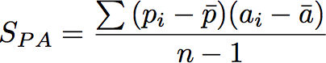
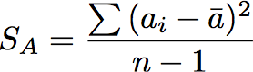
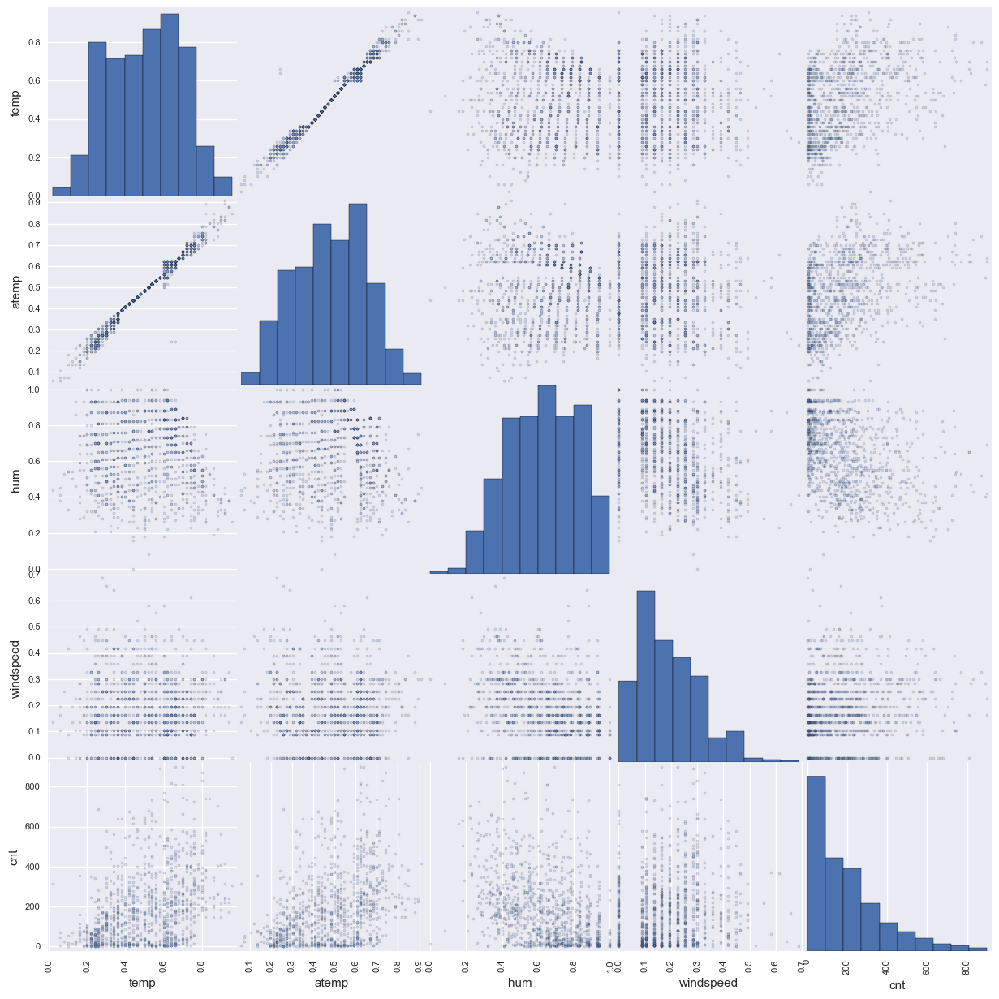
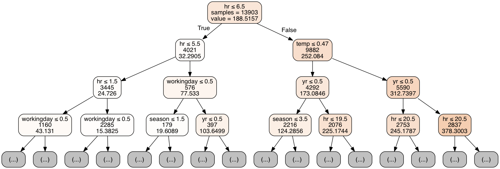
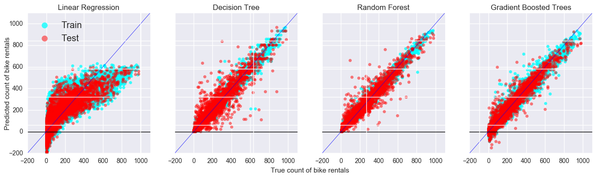

S Iyer May 8th, 2017
Bike sharing systems are a new generation of traditional bike rentals where whole process from membership, rental and return back has become automatic. These provide an alternative means of transportation in cities by making bicycling more convenient for users, as they do not need to worry about parking or theft of their own bicycle. Cities can benefit by providing a new sustainable transportation option that can increase access to transit, but also reduce crowding on overburdened transit systems. Today, there exists great interest in these systems due to their important role in traffic, environmental and health issues.
The work presented here analyzes the effect of weather on the use of the Washington, DC, bikeshare system. Hourly weather data, including temperature, rainfall, snow, wind, fog, and humidity levels are linked to hourly usage data. This information is useful for understanding bicycling behavior and also for those planning bikeshare systems in other cities.
In Washington, DC, Capital Bikeshare (CaBi) is one of the largest bikeshare system in the nation with over 1,200 bicycles at 140 stations(Alta Bicycle Share, Inc. 2012). The system grew out of an early bikesharing pilot project, SmartBike D.C., launched in 2008(Alta Bicycle Share, Inc. 2012).
A wealth of data on travel behavior is being collected by these systems and Capital Bikeshare has made the trip logs of every trip taken in the system publically available [1]. This analysis exploits the dataset of bicycle trips made using Capital Bikeshare in order to determine how bicycle usage varies under different weather conditions and other calendar factors. We predict the number of rentals every hour considering various factors like temperature (both hot and cold), humidity, windspeed, and various other weather conditions that may affect bicycle usage. We are also able to control for how patterns of daylight and darkness affect trip behavior.
These results have implications for understanding the sensitivity of bicycle usage to weather conditions and how this can affect the usefulness of bicycling as an alternative mode of travel. It is also informative for those planning or operating bikesharing systems. We'll obtain these relationships by exploring various machine learning models including linear regression, decision trees, random forest and gradient boosted trees.
We'll perform the comparison of the models in terms of mean absolute error (MAE), relative absolute error (RAE), and root relative squared error (RRSE) as described by Fanaee-T et. al.[1]. Additionally, we also measure the Root Mean Squared Logarithmic Error (RMSLE) to benchmark results with Kaggle leaderboard[3].
where,



In the above equations, $a$ denotes actual target values, $p$ denotes predicted target values, $\bar{a}$ represents the average of actual target value, $\bar{p}$ denotes the average of predicted target values and $n$ denotes the sample size.
This being a regression problem (predicting count) we use squared error as the metric of choice. The relative form of these errors remove the scale of these counts (100 vs 100 million) from the comparisions.
The dataset Bike-Sharing-Dataset was obtained by the UCI Machine Learning Repository. This is a collection of databeses, domain theories and data generators which are used by the machine learning community for empirical analyses. The archive was created in 1987 by David Aha and fellow graduate students at UC Irvine. Since then it has been widely used by student, educators and researchers. The current website was designed in 2007. The UCI Machine Learning Repository is based on donations of researchers, mostly outside of UCI.
This dataset contains the hourly and daily count of rental bikes between years 2011 and 2012 in Capital bikeshare system with the corresponding weather and seasonal information. The Laboratory of Artificial Intelligence and Decision Support (LIAAD), University of Porto, aggregated the data on two hourly and daily basis and then extracted and added the corresponding weather and seasonal information that were extracted from http://www.freemeteo.com
The dataset contains the following fields:
Given below is a random sample of 10 rows from the dataset.
| instant | dteday | season | yr | mnth | hr | holiday | weekday | workingday | weathersit | temp | atemp | hum | windspeed | casual | registered | cnt |
|---|---|---|---|---|---|---|---|---|---|---|---|---|---|---|---|---|
| 9666 | 2012-02-12 | 1 | 1 | 2 | 16 | 0 | 0 | 0 | 1 | 0.2 | 0.1667 | 0.34 | 0.4627 | 16 | 148 | 164 |
| 1775 | 2011-03-19 | 1 | 0 | 3 | 15 | 0 | 6 | 0 | 1 | 0.5 | 0.4848 | 0.29 | 0.4179 | 170 | 143 | 313 |
| 10487 | 2012-03-18 | 1 | 1 | 3 | 1 | 0 | 0 | 0 | 1 | 0.46 | 0.4545 | 0.82 | 0.1343 | 25 | 88 | 113 |
| 17269 | 2012-12-27 | 1 | 1 | 12 | 9 | 0 | 4 | 1 | 1 | 0.26 | 0.2121 | 0.6 | 0.4925 | 6 | 127 | 133 |
| 13028 | 2012-07-02 | 3 | 1 | 7 | 0 | 0 | 1 | 1 | 2 | 0.76 | 0.7121 | 0.58 | 0.2239 | 12 | 31 | 43 |
| 5540 | 2011-08-23 | 3 | 0 | 8 | 17 | 0 | 2 | 1 | 1 | 0.72 | 0.6515 | 0.34 | 0.2239 | 133 | 339 | 472 |
| 6754 | 2011-10-13 | 4 | 0 | 10 | 23 | 0 | 4 | 1 | 2 | 0.58 | 0.5455 | 0.88 | 0.194 | 2 | 45 | 47 |
| 12572 | 2012-06-13 | 2 | 1 | 6 | 0 | 0 | 3 | 1 | 2 | 0.66 | 0.5909 | 0.94 | 0.194 | 7 | 27 | 34 |
| 929 | 2011-02-11 | 1 | 0 | 2 | 7 | 0 | 5 | 1 | 1 | 0.08 | 0.1667 | 0.73 | 0 | 1 | 73 | 74 |
| 603 | 2011-01-28 | 1 | 0 | 1 | 8 | 0 | 5 | 1 | 2 | 0.16 | 0.197 | 0.86 | 0.0896 | 2 | 155 | 157 |
The table below provides the statistical summary of each categorical column in the dataset.
| dteday | season | yr | mnth | hr | holiday | weekday | workingday | weathersit | |
|---|---|---|---|---|---|---|---|---|---|
| count | 17379 | 17379 | 17379 | 17379 | 17379 | 17379 | 17379 | 17379 | 17379 |
| unique | 731 | 4 | 2 | 12 | 24 | 2 | 7 | 2 | 4 |
| top | 2012-08-29 00:00:00 | 3 | 1 | 7 | 17 | 0 | 6 | 1 | 1 |
| freq | 24 | 4496 | 8734 | 1488 | 730 | 16879 | 2512 | 11865 | 11413 |
| first | 2011-01-01 00:00:00 | nan | nan | nan | nan | nan | nan | nan | nan |
| last | 2012-12-31 00:00:00 | nan | nan | nan | nan | nan | nan | nan | nan |
The table below provides the statistical summary of each continuous column in the dataset.
| temp | atemp | hum | windspeed | casual | registered | cnt | |
|---|---|---|---|---|---|---|---|
| count | 17379 | 17379 | 17379 | 17379 | 17379 | 17379 | 17379 |
| mean | 0.496987 | 0.475775 | 0.627229 | 0.190098 | 35.6762 | 153.787 | 189.463 |
| std | 0.192556 | 0.17185 | 0.19293 | 0.12234 | 49.305 | 151.357 | 181.388 |
| min | 0.02 | 0 | 0 | 0 | 0 | 0 | 1 |
| 25% | 0.34 | 0.3333 | 0.48 | 0.1045 | 4 | 34 | 40 |
| 50% | 0.5 | 0.4848 | 0.63 | 0.194 | 17 | 115 | 142 |
| 75% | 0.66 | 0.6212 | 0.78 | 0.2537 | 48 | 220 | 281 |
| max | 1 | 1 | 1 | 0.8507 | 367 | 886 | 977 |
For numeric data, the table includes count, mean, std, min, max as well as the quartiles. For categorical data, the summary includes count, unique, top, and freq. The 'top' is the most common value and the 'freq' is the most common values frequency. Timestamp column ('dteday') also include the first and last item.
Observations on features:
The plot below shows the pairwise correlation between the continuous features

Observations on correlation plot:
The correlation plot gives the correlation between pairwise columns in the data. The diagonals of the plot give the distribution of each column. As expected, 'temp' and 'atemp' have a strong correlation and contain redundant information. We choose to remove 'atemp' from the Bikes dataframe. The remaining continuous features don't exhibit a correlation between themselves.
Another relationship that can be visualized is between bike rentals and the temperature + hour of day. Following swarmplot provides a good visual representation of this relationship.

Observations on swarm plot:
The swarm plot provides a categorical scatterplot with non-overlapping points. The swarm plot is similar to a simple scatterplot, but the points are adjusted (only along the categorical axis) so that they dont overlap. This gives a better representation of the distribution of values, although it does not scale as well to large numbers of observations (both in terms of the ability to show all the points and in terms of the computation needed to arrange them). This style of plot is often called a beeswarm. The plot above gives the distribution of number bike rentals for each hour in the day. The colors of the data points indicate the temperature of the day.
We can observed that bike rentals are higher on working days during commute hours (morning around 8 am and evening around 5 pm). Compared to that, on a non-workingday the distribution is flat or more even during the whole day. This is expected as the major population would have a need for a bike during those hours.
Another observation from the plot is that bike rentals are higher when the temperature is moderately high (above the 3rd quartile). This is consistently seen throughout all hours for working and non-working days. This also makes sense since riding a bike would not be preferred on colder days/nights.
Thus, we can conlude that 'Temp', 'Hours', and 'workingday' are important features that we'll see during our model training.
We'll be exploring various learning techniques for this regression problem, as described below.
Linear Regression: Linear regression is the most basic type of regression and commonly used predictive analysis. The overall idea of regression is to examine two things: (1) does a set of predictor variables do a good job in predicting an outcome variable? Is the model using the predictors accounting for the variability in the changes in the dependent variable? (2) Which variables in particular are significant predictors of the dependent variable? And in what way do they - indicated by the magnitude and sign of the beta estimates - impact the dependent variable? These regression estimates are used to explain the relationship between one dependent variable and one or more independent variables.
Decision Tree: A decision tree is a machine learning algorithm that partitions the data into subsets. The partitioning process starts with a binary split and continues until no further splits can be made. Various branches of variable length are formed. Decision trees are popular among non-statisticians as they produce a model that is very easy to interpret. Each leaf node is presented as an if/then rule. Cases that satisfy the if/then statement are placed in the node. Further trees can handle data of different types, including continuous, categorical, ordinal, and binary. Transformations of the data are not required.
Random forest (bagging): Random Forest (RF) is a representative of the state-of-the-art ensemble methods. It is an extension of Bagging, where the bootstrap sampling is used to obtain data subsets for training multiple base learners. Bagging adopts the most popular strategies for aggregating the outputs of the base learners, that is, voting for classification and averaging for regression. Random forest extends this by incorporating randomized feature selection. During the construction of a component decision tree, at each step of split selection, RF first randomly selects a subset of features, and then carries out the conventional split selection procedure within the selected feature subset.
Gradient Boosted Regression Tree (boosting): The term boosting refers to a family of algorithms that are able to convert weak learners to strong learners. Intuitively, a weak learner is just slightly better than random guess, while a strong learner is very close to perfect performance. Gradient boosting builds an ensemble of trees one-by-one, then the predictions of the individual trees are summed. The next decision tree tries to cover the discrepancy between the target and the current ensemble prediction by reconstructing the residual.
We employ two benchmarks to measure the performance of our models:
There are some columns that require specific type casting or transformations to ensure correct usage. Furthermore, as noted earlier, some of the columns need to be excluded to avoid leakage of the response variable in the predictors. These transformations are documented in the code below.
# Create the dataframe bikes for analysis
# Identify which columns are continuous vs categorical variables
# Do not include columns - casual, registered and dteday based on observations
continuous_features = ['temp', 'atemp', 'hum', 'windspeed']
categorical_features = ['season', 'mnth', 'hr', 'season', 'yr', 'holiday',
'weekday', 'workingday', 'weathersit']
output = ['cnt']
bikes = bikes[continuous_features + categorical_features + output]
for cat in categorical_features:
bikes[cat] = bikes[cat].astype('category')Linear regression requires all columns to be of continuous types. Since we have categorical features, the best approach is to encode them to integer columns using dummy encoding using pandas.get_dummies function:
# Create a new dataframe that is a copy of original
bikes_encoded = bikes.copy()
# Create dummy columns for each categorical variable and update in the new dataframe
for cat in categorical_features:
dummy_cols = pd.get_dummies(bikes_encoded[cat], prefix=cat)
# Remove the original categorical variable from the new dataframe
bikes_encoded.drop(cat, axis=1, inplace=True)
# Add the dummy variables to the new dataframe
bikes_encoded = pd.concat([bikes_encoded, dummy_cols], axis=1)Popular machine learning library scikit-learn was used to execute the algorithms explored in this work. Scikit-learn provides a range of supervised and unsupervised learning algorithms via a consistent interface in Python.
It is licensed under a permissive simplified BSD license and is distributed under many Linux distributions, encouraging academic and commercial use.
The library is built upon the SciPy (Scientific Python) that must be installed before you can use scikit-learn. This stack that includes:
The vision for the library is a level of robustness and support required for use in production systems. This means a deep focus on concerns such as ease of use, code quality, collaboration, documentation and performance. Although the interface is Python, c-libraries are leverage for performance such as numpy for arrays and matrix operations, LAPACK, LibSVM and the careful use of cython.
The metric functions used in this work were implemented in Python, using the numpy library. The implementation was straightforward and documented below:
def rae(true_val, pred_val):
true_mean = true_val.mean()
diff = np.abs(true_val - pred_val)
return diff.sum() / np.abs(true_val - true_mean).sum()
def rrse(true_val, pred_val):
true_mean = true_val.mean()
diff = np.square(true_val - pred_val)
return diff.sum() / np.square(true_val - true_mean).sum()
def cc(true_val, pred_val):
true_mean, pred_mean = true_val.mean(), pred_val.mean()
spa = ((true_val - true_mean) * (pred_val - pred_mean)).sum()
sa = np.square(true_val - true_mean).sum()
sp = np.square(pred_val - pred_mean).sum()
return spa / np.sqrt(sa * sp)Furthermore, various data transformations including splitting data for train and test were performed using the popular Pandas library [3]. Libraries used for plotting were seaborn[4] and matplotlib[5].
Data extraction
For each model, we employ scikit-learn functions that follow a set pattern: initialize the model and then fit using the data.
----------------------------------------------
from sklearn.linear_model import LinearRegression
# Initiate Model
lin_regr = LinearRegression(normalize=True)
# Train the model
lin_regr.fit(train_X_encoded, train_y_encoded)
--------------------------------------------------------------------------------------------
from sklearn.tree import DecisionTreeRegressor
# Initiate Model
dec_tree = DecisionTreeRegressor(max_depth=15)
# Train the model
dec_tree.fit(train_X, train_y)
--------------------------------------------------------------------------------------------
from sklearn.ensemble import GradientBoostingRegressor
# Initiate Model
gbr = GradientBoostingRegressor(n_estimators=1000,
max_depth=3,
learning_rate=0.8)
# Train the model
gbr.fit(train_X, train_y)
--------------------------------------------------------------------------------------------
from sklearn.ensemble import RandomForestRegressor
# Initiate Model
rand_forest = RandomForestRegressor(n_estimators=20, max_depth=15)
# Train the model
rand_forest.fit(train_X, train_y)
----------------------------------------------It's not clear how many trees should be included in the Random Forest. To make a structured decision, we employ cross validation to perform a grid search across multiple number of trees.
Specifically we try forests with 5 trees to 65 trees, as shown below.
----------------------------------------------
from sklearn import model_selection
from sklearn.ensemble import RandomForestRegressor
# Specify parameters for 10-fold cross validation
kfold = model_selection.KFold(n_splits=10,
random_state=1)
print "\n----------------------------------------------"
print "Average validation score:"
cv_mean_scores = []
for n_trees in range(5, 71, 10):
# Initiate Model
rand_forest_cv = RandomForestRegressor(n_estimators=n_trees,
max_depth=20,
n_jobs=4)
# Calculate and print cross-validation score
results = model_selection.cross_val_score(rand_forest_cv, train_X, train_y, cv=kfold,
scoring=metrics.make_scorer(rae, greater_is_better=False))
print("For {0} trees is {1}".format(n_trees, results.mean()))
cv_mean_scores.append((n_trees, results.mean(), results.std()))
----------------------------------------------Results:
----------------------------------------------
Average validation score:
For 5 trees is -0.201763886736
For 15 trees is -0.18777456281
For 25 trees is -0.184363069995
For 35 trees is -0.183164892377
For 45 trees is -0.182607144176
For 55 trees is -0.181847832758
For 65 trees is -0.182103770565
----------------------------------------------
The cross validation results give the highest score for a forest with 55 trees. It is, however, important to note that the scores don't increase much after a certain point. To ensure we use a simple model (to avoid overfitting), while retaining good accuracy, we pick the simplest model that is within one standard deviation of the best model. Judging from the figure above, the forest with 25 trees fits the bill.
In this section we provide results and insights into each model.
Mean Value Benchmark
-----------------------------------------------------------------
Summary of predictions for test data:
Prediction
count 3476
mean 189.1888
std 5.685160e-14
min 189.1888
25% 189.1888
50% 189.1888
75% 189.1888
max 189.1888
-----------------------------------------------------------------
MAE for training data: 142.338263153
MAE for test data: 142.369290925
-----------------------------------------------------------------
RAE for training data: 1.0
RAE for test data: 0.998063562872
-----------------------------------------------------------------
RRSE for training data: 1.0
RRSE for test data: 1.00005716883
-----------------------------------------------------------------
RMSLE for training data: 1.57116953633
RMSLE for test data: 1.5631424794
---------------------------------------------------------------------------------------------------------------
Linear Regression Model details:
LinearRegression(copy_X=True, fit_intercept=True, n_jobs=1, normalize=True)
-----------------------------------------------------------------
R-Square for training data: 0.537756866344
-----------------------------------------------------------------
Summary of predictions for test data:
Prediction
count 3476.000000
mean 189.386651
std 147.605852
min -194.500000
25% 78.500000
50% 191.750000
75% 295.000000
max 613.500000
-----------------------------------------------------------------
MAE for training data: 74.9524203409
MAE for test data: 75.9496547756
-----------------------------------------------------------------
RAE for training data: 0.52756830333
RAE for test data: 0.528806780634
-----------------------------------------------------------------
RRSE for training data: 0.313859295957
RRSE for test data: 0.317508260403
-----------------------------------------------------------------
RMSLE for training data: 0.831373944587
RMSLE for test data: 0.821011547446
-----------------------------------------------------------------Analysis for Linear Regression:
cnt)cnt, like Decision Tree to model greater variability in the data.----------------------------------------------
Decision Tree Model details:
DecisionTreeRegressor(criterion='mse', max_depth=15, max_features=None,
max_leaf_nodes=None, min_impurity_split=1e-07,
min_samples_leaf=1, min_samples_split=2,
min_weight_fraction_leaf=0.0, presort=False, random_state=None,
splitter='best')
-----------------------------------------------------------------
Summary of predictions for test data:
Prediction
count 3476.000000
mean 193.543441
std 179.346887
min 1.000000
25% 41.000000
50% 153.000000
75% 290.000000
max 919.000000
-----------------------------------------------------------------
MAE for training data: 9.54837085521
MAE for test data: 33.8699654776
-----------------------------------------------------------------
RAE for training data: 0.0672082074032
RAE for test data: 0.235822894222
-----------------------------------------------------------------
RRSE for training data: 0.0132821892645
RRSE for test data: 0.103842051796
-----------------------------------------------------------------
RMSLE for training data: 0.120734610962
RMSLE for test data: 0.436261876945
-----------------------------------------------------------------Let's visualize the decision tree to get an idea of how it splits on features:

Analysis for Decision Tree:
hr, temp, workingday as the split features. This indicates the importance of these particular features.----------------------------------------------
Gradient Boosted Regression Trees:
GradientBoostingRegressor(alpha=0.9, criterion='friedman_mse', init=None,
learning_rate=0.8, loss='ls', max_depth=3, max_features=None,
max_leaf_nodes=None, min_impurity_split=1e-07,
min_samples_leaf=1, min_samples_split=2,
min_weight_fraction_leaf=0.0, n_estimators=1000,
presort='auto', random_state=None, subsample=1.0, verbose=0,
warm_start=False)
-----------------------------------------------------------------
Summary of predictions for test data:
Prediction
count 3476.000000
mean 193.249137
std 179.457494
min -165.000000
25% 43.000000
50% 156.000000
75% 293.250000
max 909.000000
-----------------------------------------------------------------
MAE for training data: 20.8884413436
MAE for test data: 29.9496547756
-----------------------------------------------------------------
RAE for training data: 0.147027667802
RAE for test data: 0.208527353676
-----------------------------------------------------------------
RRSE for training data: 0.029217618587
RRSE for test data: 0.0605477754712
-----------------------------------------------------------------
RMSLE for training data: 0.411950774982
RMSLE for test data: 0.50440361128
-----------------------------------------------------------------Analysis for Gradient Boosted Trees:
----------------------------------------------
Random Forest Model with Cross-Validation details:
RandomForestRegressor(bootstrap=True, criterion='mse', max_depth=20,
max_features='auto', max_leaf_nodes=None,
min_impurity_split=1e-07, min_samples_leaf=1,
min_samples_split=2, min_weight_fraction_leaf=0.0,
n_estimators=25, n_jobs=3, oob_score=False, random_state=None,
verbose=0, warm_start=False)
-----------------------------------------------------------------
Summary of predictions for test data:
Prediction
count 3476.000000
mean 193.671461
std 175.455396
min 1.000000
25% 47.000000
50% 156.500000
75% 287.000000
max 918.000000
-----------------------------------------------------------------
MAE for training data: 10.3020930734
MAE for test data: 26.5261795167
-----------------------------------------------------------------
RAE for training data: 0.0725134390427
RAE for test data: 0.184691077717
-----------------------------------------------------------------
RRSE for training data: 0.00912075968267
RRSE for test data: 0.058918498909
-----------------------------------------------------------------
RMSLE for training data: 0.166582047386
RMSLE for test data: 0.353082360615
-----------------------------------------------------------------Given below is a comparison of the performance of four models on the test data set.
| Modeling technique | mae | rae | rrse | rmsle |
|---|---|---|---|---|
| Mean Value benchmark | 142.37 | 0.9980 | 1.0000 | 1.5631 |
| Linear regression | 76.726 | 0.5403 | 0.3248 | 0.8210 |
| Decision Tree | 35.177 | 0.2477 | 0.1177 | 0.4362 |
| Gradient Boosted Tree | 29.9496 | 0.2085 | 0.06054 | 0.5044 |
| Random Forest | 26.63 | 0.1876 | 0.06549 | 0.3530 |

The figure above compares the performance of the four models on the training (cyan) and testing (red) datasets. The x-axis represents the true count of each data point and the y-axis represents the prediction for that point. The ideal model would have all points on the diagonal (blue line). Further, since this is a count, all points should be positive, implying that the ideal model should have all prediction points above the x-axis (black line).
We can see from the comparison figure that linear regression performs poorly when compared to our ideal model. The points have high variability along the x-axis, with no prediction going over about 600. The linear model also makes the egregious mistake of predicting negative counts (min value of about -200).
Compared to the linear model, decision tree makes good predictions. Most of the points lie along the diagonal, but have considerable variability around that line. The test data points have higher variance than train, again an indicative of overfitting.
Random forest and Gradient Boosted Trees show better performance than Decision Tree with lower variability around the diagonal line. The train and test performance is comparable in either case. The boosting method, however, also falls prey to predicting negative counts for low cardinality rentals. Considering this conspicuous inaccuracy, we can conclude that random forest is the best model for this problem among the four tried in this work.
Comparing these results to the 'Mean Value benchmark' established earlier, it's clear that each model is doing better than a NULL model. Further, looking at the Kaggle leaderboard, Random Forest's RMSLE value of 0.3530 would figure in the top 10 rankings. The best value on the leaderboard is 0.33757 and the tenth finish value is 0.35784. Thus we can say with high confidence that the RF model we built is a good predictor for this problem set.

The figure above gives the importance of each feature used in the final Random Forest model. The top five important features in descending order are hr (which hour was the bike rented), temp (temperature at the time), year (rental year), workingday (whether the day was a working day or not) and hum (humidity). The fact that hr and temp played the most important part was also apparent from the swarm plot in the 'Exploratory Visualization' section.
In the world of bicycle research, data collection is often both challenging and expensive. Additionally, research regarding the relationship between weather and cycling is typically conducted based on daily averages and not necessarily at the precise time that the trip was taken. The latter is more meaningful as weather can vary throughout the day. Through data collection technology embedded within bikeshare systems, the ability to understand different impacts on at least bikeshare trips is possible. The weather of Washington, DC contains almost all variations. It rains and snows, has cold days and hot days and can be excessively humid at times. This analysis helps to better document the relative impact of various weather conditions on bikesharing trips in Washington, DC, considering the precise weather observation at the time the trip was taken. The results of this analysis show that fewer trips are made in rain, high humidity, high wind speeds, and low temperatures, while trips increase with higher temperatures especially in the evenings.
From our analysis, we concluded that Random Forest model worked better than Gradient Boosted Trees. In practice, Gradient Boosted Trees provide good results, but require fine tuning of several hyperparameters including the number of trees, the depth (or number of leaves), and the shrinkage (or learning rate). The model in this analysis was tuned significantly which could explain some of the negative predictions. The author believes boosted trees would yield best results if tuned correctly.
The year feature being important is surprising, but understandable since this is data for limited years - there could be year-specific trends, which might get washed out if the analysis is run on multiple years. Re-running this analysis on a bigger dataset would be an interesting exercise.
An additional analysis that was outside the scope of this study is to embed the data, with metro and other transportation information. Bike rentals are expected to have a strong correlation with the availability of public transportation systems. (Example: do bike rentals increase in evening if public transportation becomes less frequent?).
[1] Fanaee-T, H. & Gama, J. Prog Artif Intell (2014) 2: 113. doi:10.1007/s13748-013-0040-3 [2] Scikit-learn: Machine Learning in Python, Pedregosa et al., JMLR 12, pp. 2825-2830, 2011. [3] Bike sharing Kaggle competition: https://www.kaggle.com/c/bike-sharing-demand#evaluation